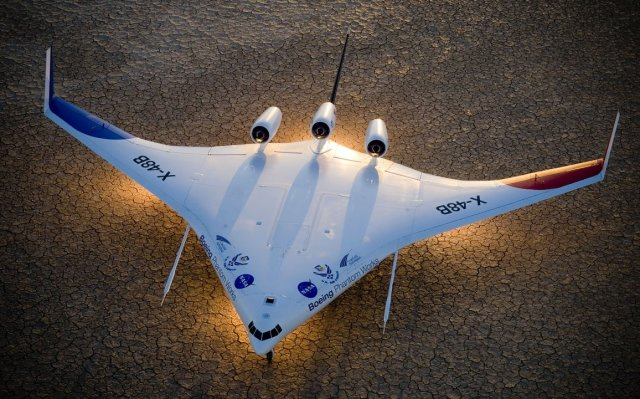
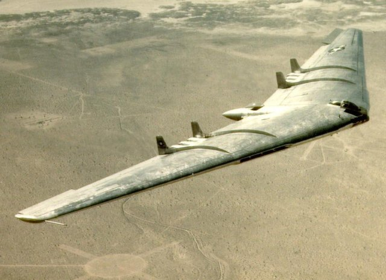
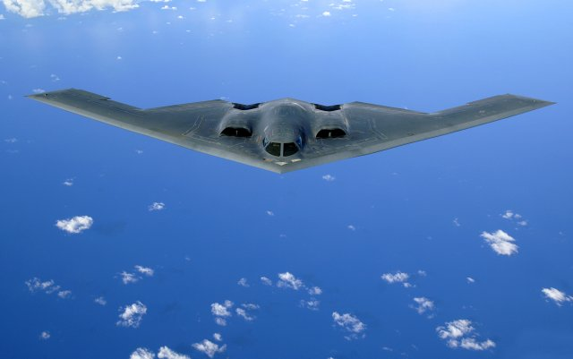

Of Blended Wing-Bodies and Flying Wings
The remote controlled X-48B concept airplane flew for the first time on July 20, 2007. Joining an illustrious list of previous X-planes, such as the X-15, the X-48B aims to prove the viability of the blended wing-body concept – a combination of a flying wing and a lifting body. If history is anything to go by, the X-48B will have its work cut out.
X-48B Blended Wing BodyCourtesy of NASA
With Boeing's takeover of McDonnell Douglas, Boeing inherited and successfully flew a small remote-controlled blended wing-body with a 17 ft wingspan (5.2m) powered by propellers in 1997. Next Boeing and NASA moved on to a more ambitious blended wing-body program (X-48A) with a 35 ft (10.7) wingspan powered by 3 turbojets. The X-48A was abandoned in 2002 after problems with its flight control system kept it grounded. For the X-48B, they contracted nimble Cranfield Aerospace to build an 8.5% scale model with a 21 ft (6.4m) wingspan again powered by 3 turbojets.
Boeing and NASA aren't the first to be enticed by the fuel efficiency of a flying wing derived design – nor are they likely to be the last. On such designs the entire airplane (including the fuselage) generates lift and is streamlined to minimize drag and produce a high lift-to-drag ratio. On a typical airplane the cylindrical fuselage is a significant source of drag and generates no lift. Thus, a flying wing derived design promises significantly higher fuel economy over traditional airplanes. Of course there are also serious drawbacks to flying wings; otherwise we'd see more of them. The main problem is their inherent aerodynamic instability, such that if a problem occurs in flight they tend to become fatally uncontrollable. Another issue is where and how to carry cargo, given that slender wings are the most efficient aerodynamically but provide little cargo space.
Northrop YB-49 Flying WingCourtesy of US Air Force
Initial interest in viable flying wings surfaced during World War II. The Horten Ho-IX (Ho 229) was an advanced German turbojet-powered flying wing prototype that flew toward the end of the war (1945) and crashed on its maiden flight. Additional prototypes were captured by the US military (under Operation Paperclip) during their liberation of Europe and sent to Northrop for evaluation. Northrop was the leading US exponent of flying wings, having flown its N-1M in 1941 and the N-9M in 1942. Northrop's interest in flying wings was initiated by pre-war Horten glider designs.
The other aerospace power of the time, Britain, flew the Armstrong Whitworth AW.52 in 1947, based on a flying wing design pursued during the war. The first of 2 prototypes crashed in 1949. The pilot survived, becoming the first British pilot to successfully eject in a real situation using a Martin Baker Type 1 ejection seat.
Northrop, more than any other manufacturer, advanced the flying wing concept into viable airplanes, producing the YB-35 (1946) and YB-49 (1948) prototypes. The YB-49 was essentially a turbojet version of the YB-35 piston-powered prototype. Like many flying wing programs at that time, the development was marred by fatal accidents. One prototype YB-49 crashed in 1948, killing the entire 5 man crew. Ultimately the YB-49 program was dropped after proving inferior to the conventionally configured Boeing B-47 Stratojet in terms of weapons carried and range.
Northrop Grumman B-2 SpiritCourtesy of US Air Force
Northrop Grumman is a model of persistence and finally in 1989 it flew the B-2 Spirit flying wing for the first time. Flying wings are inherently stealthy given their relatively small vertical cross-section and so there was a compelling reason to revisit the design. With advances in flight control systems brought about by fly-by-wire controls, the inherent instability of flying wings no longer posed a safety problem. Shrouded in secrecy and controversy concerning its cost (the most expensive airplane ever at $2 billion apiece), the B-2 is the sole a rare example (see comment) of a flying wing reaching production.
Let's hope that the promised benefits of a blended wing-body for civilian airplanes can be realized, with the X-48B pushing the concept design forwards. With access to advanced Computer-Aided Engineering (CAE) tools such as Computational Fluid Dynamics (CFD) and mature fly-by-wire controls the X-48B and, hopefully, its successors have a head start over most of their predecessors.
If there's a lesson to learn here it's that persistence pays – just ask Northrop.
Feedback
Questions? Ideas? Problems?

Recent blog posts
- CFD Simulates Distant Past
- Background on the Caedium v6.0 Release
- Long-Necked Dinosaurs Succumb To CFD
- CFD Provides Insight Into Mystery Fossils
- Wind Turbine Design According to Insects
- Runners Discover Drafting
- Wind Tunnel and CFD Reveal Best Cycling Tuck
- Active Aerodynamics on the Lamborghini Huracán Performante
- Fluidic Logic
- Stonehenge Vortex Revealed as April Fools' Day Distortion Field
 Get our Blog feed
Get our Blog feed
Comments
Flying wings
"B2 bomber first flying wing to reach production stage". Not so ; the Messerschmidt 163 rocket powered fighter aircraft flown against bomber formations in 1944 was a production aircraft, several hundred were produced. Even earlier was the Dunne flying wing, first flown in 1913.Variants were produced under license in America in the twenties and thirties as the Burgess-Dunne, several were operated by the American Navy out of Boston.
how a multi-millionaire killed the first SAC atomic bomber
I just self published a dramatization of a true story, researched since 1985, via government microfilmed records of Convair B-36 'Stick' and Northrop B-35 'Wing' R&D and testing competition for a 4000-mile-target SAC contract for the first nuclear bomber. I uncovered the AAF colonel who effectivly killed Gen. Arnold's first-choice B-35 Wing contract for 200 trans-Atlantic bombers, though Arnold didn't want the B-36. And I name the persons in the military industrial complex who stiffed the development and testing of the very superior XB-35 Northrop Wing... and I explain each one of the many lies the AAF published in discrediting the Wing. I found and interviewed the Northrop test pilot, Charles Tucker, who tested, for the AAF, the Wing's stall tests and even recovered the huge bomber from a spin (photo documentation), and who also was aboard the Wing when the AAF discovered the YB-49 (jet version) of the Wing proved to be radar invisible in 1948 !! ... the the AAF ignored this info, because they wanted the BIG B-36, even though it was 50 mph slower at a two miles lower altitude, had thousands of miles less range, and was very radar visible to Russia's nine radar rings which guided 19,000 USSR interceptors in 1949 and on. What's more, the AAF didn't understand the B-35 was actually more maneuverable than the new Mig-15 at high altitude. And I show how Floyd Odlum corrupted the new Air Force's first secretary, Stuart Symington, who cancelled a final production contract for the Wing in order to save his friend Odlum's company, Convair, from bankruptcy, causing a 'billion dollar blunder' investigation by Congress, and bought anyway 75 more multi-million-dollar useless B-36s in 1950. This, I believe invited the Korean War, costing 33,000 American military lives, and multi-billon in military waste, and launched USSR adventurism by making the AF unable to threated retaliation for a decade. This and a lot more of relevant facts are all in 'GMDS, A Billion Dollar Blunder', available from me or from Amazon.com.
Pure Wing, Blended Wing and Lifting Fuselage
The pure wing of Northrop was an awesome creation and should have been the choice for our long range, strategic, nuclear bomber. As mentioned, politics got in the way otherwise at least one would have been saved for the Smithsonian.
The BWB is a good step forward in design with 20% lift coming from the body and 25% better fuel economy per passenger. Boeing claims it can have it airworthy by 2020 and claims lower fares. With the far behind schedule 787 it's hard to believe the untested BWB would be ready in this time period. The production costs will be much higher than claimed because of all the curves. Each piece will need to be made to fit and that will not be a cheap process. Fares might be slightly lower for the introduction but would quickly rise to maintain profits.
The "Lifting Fuselage" has a long history of flight and wind tunnel testing and was actually the first long range bomber chosen by General Hap Arnold in 1939. Through more personal and political pettiness the Lifting Fuselage design was unjustly swept aside just as Northrop's Flying Wing design.
Because of the Lifting Fuselage's documented stability, safety and superiority in load capacity and fuel efficiency, this design could be built and tested long before Boeing ever got a full scale test platform in the air. The Lifting Fuselage design has a history of up to 2 1/2 times the load capacity of any plane of similar size and power. (Proposed Boeing 754, Lifting Fuselage design reveals over twice the payload vs Boeing's 767 design - http://www.meridian-int-res.com/Aeronautics/Burnelli.htm ) It has the potential of 50% or higher lift from the fuselage alone and of 50% better fuel economy. These are twice that of the BWB. A large airliner could take off and land at speeds around 100 mph instead of almost 200 mph of today's tube designs. The top speed would be as much or more of any airliner today with the potential of fuel efficient, supersonic flight with modifications.
Here are some references to learn more about the Lifting Fuselage design:
Introduction - http://www.burnelli.com/Welcome.html
History of design - http://www.burnelli.com/wp/pics
1st RC airline model - http://aerodromedia.blogspot.com/
Sr. Aeronautical Engineer's opinion - http://www.meridian-int-res.com/Aeronautics/Burnelli_AIAA.pdf
If you'd like to get involved with the rebirth of this aircraft, go to burnelli.com and contact The Burnelli Company.
I'm workin' on it.
revision of GM,DS!
I have revised and re-titled GM,DS!, by deleting a chapter that was irrelevant, and by adding Author's Notes to each chapter or section that explains why it is important, and what is fact and what is fiction.
Here I wish to note that Charles Tucker, the iron-nerve Northrop test pilot and former Flying TIger, early Air Force jet pilot, close personal friend of Neil Armstrong, and Cleveland National Air Races 1946-9 participant, died last year at the age of 91. Chuck fearlessly tested and testified to the stability and efficiency to the Northrop Wings which he flew through more than 100 hours of rigorous Air Force stall-test requirements that Air Force test pilots refused to fly, as well as the auto-pilot installation that demonstrated its excellence as a bomber, contradicting bogus Air Force claims of instability... calling the big Wing as "... the sweetest flying airplane I can remember."
new title
As of June, 2015 this book is sold under the title "Goodbye Beautiful Wing: aka GM,DS!" (Good Men, Do Something!) (Paperback) by Terrence O'Neill...
the old title will draw a blank on amazon and abebooks, so u have to search by author to get the new title.
The rubbery definitions, and the myths about "all-wing"
Burnelli planes with substantial tails, and no fuselage but a simple chunky airfoil section square or rectangle, were called "flying wings".
Nobody made that mistake in the '70s when Boeing started publicizing the model 754 to cargo flyers like Emirates, Cargolux and Husky. up to 300+ feet of containers in some designs.
Boeing patent sheets claim that the tube & wing is nearing the end of its ability to be stretched. Landing gear have to be strengthened and more added, and they need to be taller for rotation angle, and the wing root box on a bigger stretched version is nothing like earlier models.
In a spanloaded plane, you add more lanes of freight or internal space, every couple of lanes you add an engine and another landing gear set. Everything else from rotation angle, lower landing speeds, and landing gear sets would stay the same, and L/D goes up as you stretch it spanwise.
Like the Burnelli, there was no attention paid to "blending" anything, no questions of lack of stability or control authority.
One Burnelli plane in the '30s crashed due to apparent mechanical errors. It hit the ground 110 degree roll, 20 degree nose down, at ~125 kts.
The wings and tails turned to confetti and the engines broke off as the fuselage body cart-wheeled, coming to rest upright. When they broke it open and got to them, the 2 crew walked away.
Another Burnelli plane (CBY-3, in a museum now) also had more payload and lower landing speed, and the test pilot boasted about being able to do a "suicide stall": cut power and pull back, and just as it starts to fall off push a rudder pedal and let go the controls.
It simply turned a bit, and flew off level at whatever the power setting allows.
It is a myth that "all-wing" or "lifting body" or any such planes must always be risky and dangerous and expensive. It's become a straw-man to point to the XB-49 as a sole example of the concept, and say "it can't work without hyper expensive computers and you're all dead if the computers go out".
Too many designers try for the purist's all-wing with no vertical tails. Then they must add complexity and accept risk, and then they always apply extra static drag for yaw control. Designers who tried wing-tip fins show that it's only a little less terrible.
Nobody yet has made an acceptable regular operational plane without fins and rudders. Yes, I include the B-2 and hang gliders and sport planes in that.
Many designers have added fin and rudder if not substantial fuselage to project it aft, no separate horizontal tailpanes, and made safe and aerobatic and stable planes. (Too many: Cheranovsky "BICh" series, Lippisch, Fauvel AV-10 and the successful AV-36 series, Canova, Sukhanov, Arup (of Indiana), the Eshelman "Flounder", others.)
People tried to call Northrop's little "Avion 1" x-216h a "flying wing", even though it had booms carrying tails. It was among the best of planes in its class in all criteria, and a good deal faster than all others. Northrop gave up on a good thing, to hare off after finless planes.
Similarly, see the 1943 Higgins-Bellanca model 39-60 logistics freighter and the Boeing model 360-362 bomber series of the sort: Everything in the wing, and tails on booms. Greater range and payload than similar planes. (but they look funny)
Burnelli planes exhibited and other designs for tailed lifting fuselage planes claim much shorter runways, and many of them require no new infrastructure changes.
By Boeings own numbers, with same engines and fuel load as a conventional plane, model 754 and the military 759 would get x1.5 the range and payload. (Not said that it's range _or_ payload, so that it carries a heavier load the same distance or a lighter load greater distance).
After the Burnelli estate said they'd be willing to have it licensed, Boeing hastily dropped it and said then and after the work on the X-48 that they have no interest ever in building commercial or transport planes to a lifting fuselage configuration (though they're happy to take government contracts making military planes that are lifting body fuselages)
See also the more recent Lock-Mart proposal for a "hybrid wing/body" logistics plane.
They said confidently that it requires no new materials or techniques, has no stability or control authority issues, and compared to a normal plane it performs like the Boeing lifting-fuselage designs.
See also for reference the huge Tupolev Tu-404, and the partially derived Airbus "VELA" study BWB designs that eliminate any concerns for stability and authority, as did the X-48C by extending the center body airfoil aft and putting fins and rudders there.
A passenger plane for 20 or 100 seats can benefit from it (eliminating static-drag in favor of lifting volume) as well as the rather hyperbolic 2000 passenger hyped designs that everyone thinks about.
There are no new breakthroughs or great expense or risk in making these things. Some marketing execs say that "passenger acceptance" is the insurmountable hurdle, and "If it looks right, it'll fly right": is an absolute rule, admitting of no possible exceptions.